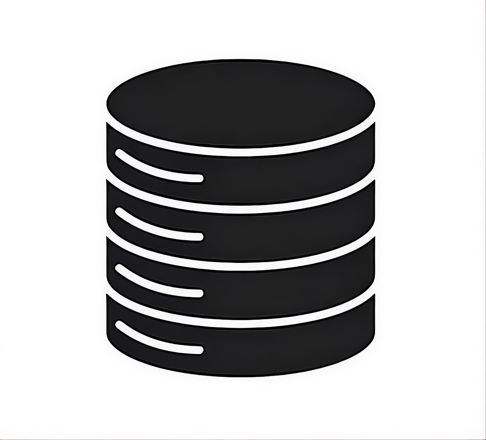
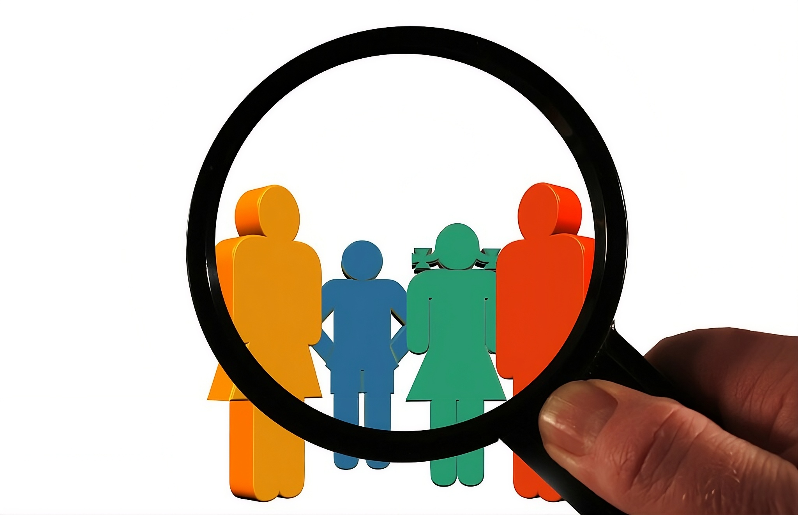

Az ötlet
Honnan jött az ötletünk?
Az ötletünk abból fakadt, hogy a mai modern világban egyre több a csalás a digitális térben, és így a csalók egyre kifinomultabb módszereket használnak ahhoz, hogy az adatainkat kicsalják tőlünk.
Honnan jött az ötletünk?
Az ötletünk abból fakadt, hogy a mai modern világban egyre több a csalás a digitális térben, és így a csalók egyre kifinomultabb módszereket használnak ahhoz, hogy az adatainkat kicsalják tőlünk.
Mitől is használ a programunk?
A programunk a mesterséges inteligenciát használja ahhoz, hogy egy üzenet tartalmáról megállapítsa azt, hogy ez egy kéretlen üzenet (SPAM), vagy esetleg egy ártalmatlan levélről van szó.

Hogyan is készült a programunk?
A programunkban található AI-t egy több mint 5 000 levélből álló adatbázissal tanítottuk be. A betanítása során a programunk figyeli az olyan szavakat és kifejezéseket, amelyek egy SPAM levélnek az általános összetevői.

Kiknek is jelent megoldást?
Programunkat nem csak az idősebbeknek, hanem a fiataloknak is ajálnjuk, hiszen a gyorsan fejlődő világban ugyan ilyen gyorsan fejlődik az adathalászok trükkjei is és a legújabb csalásokhoz még a fiataloknak is alkalmazkodniuk kell.
Mit remélünk a projektünktől?
Amennyiben a programunk sikeresenek mutatkozik nem zárkózunk el az esetleges fejlesztésétől sem. Tervben van a programukban található AI-unk naprakészen tartása is valamilyen dinamikus módon.
Hogyan dolgoztunk?
Csapatunkban a tagok között mindenkinek megvolt a saját egyéni szerepe, és mindenki legjobb tudása szerint igyekezett aktívan részt venni a projektünk sikerességének az érdekében.